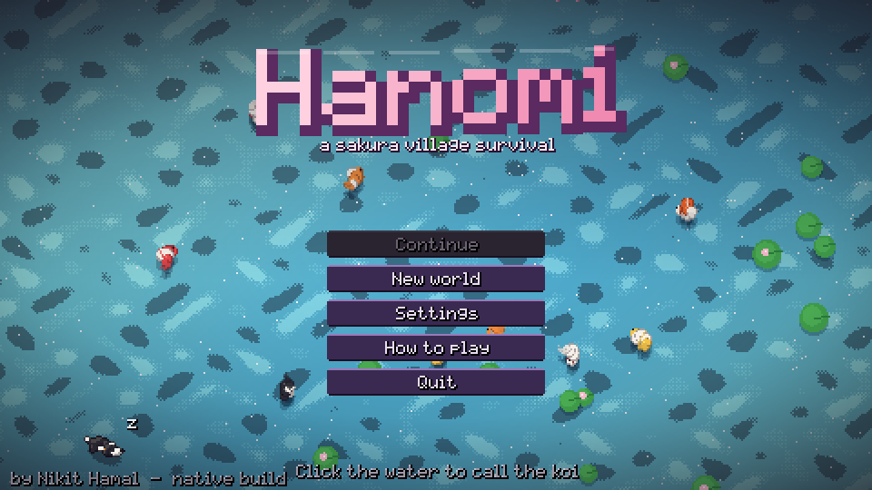
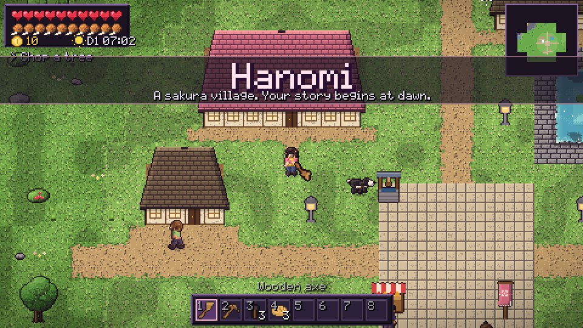
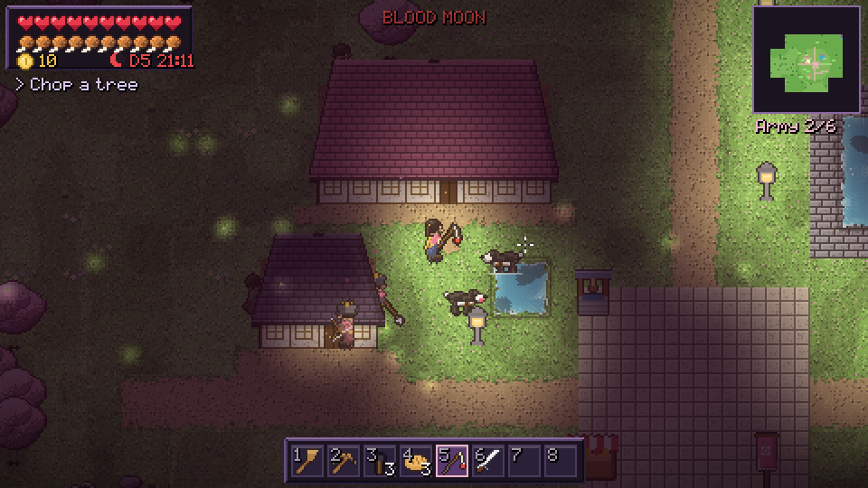
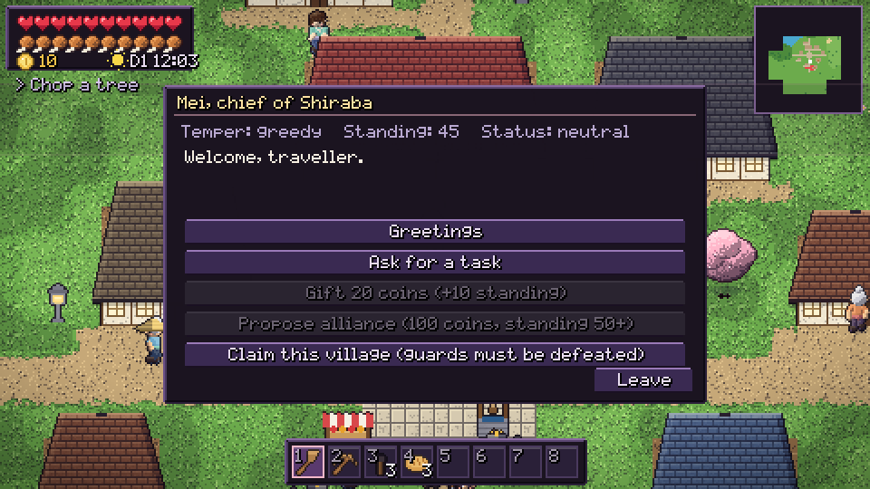
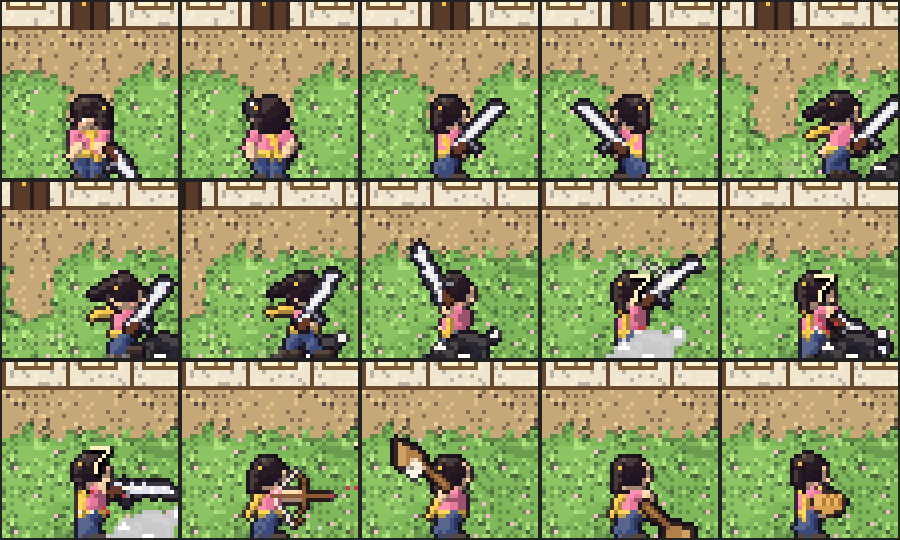

Hanomi
A sakura village survival game. Play the original in your browser, or download the native C++ rebuild for Windows (0.8 MB, no installer, no dependencies).
Play in browserDownload hanomi.exeSource




Native build features: skeletal-rigged characters (IK limbs, spring hair & scarf), 9-species animal rig, procedural pixel art, dynamic lighting, weather, generative music, Blood Moon raids, clans & armies. See STATUS.md.